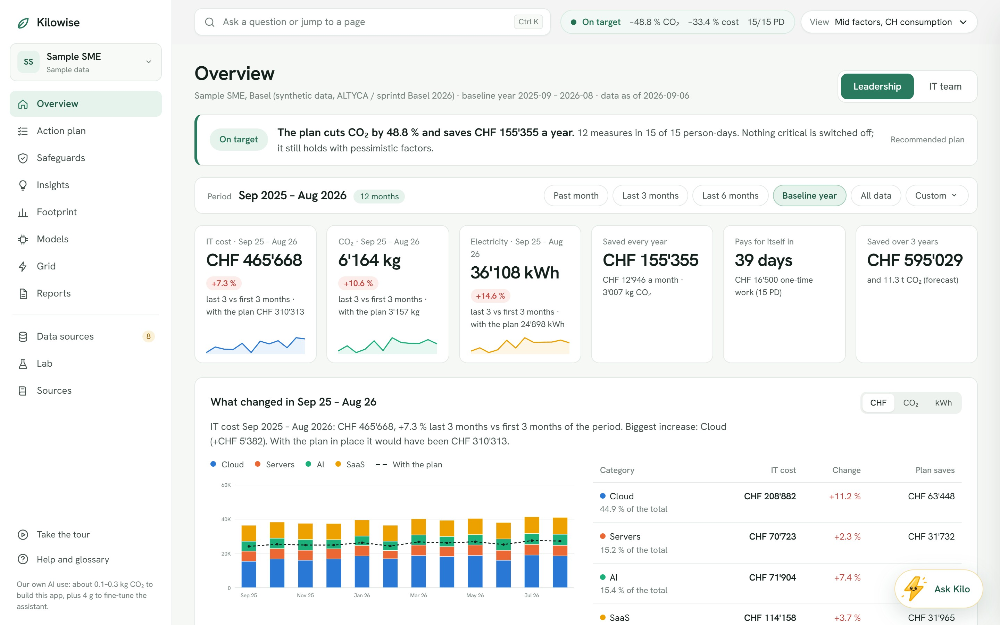
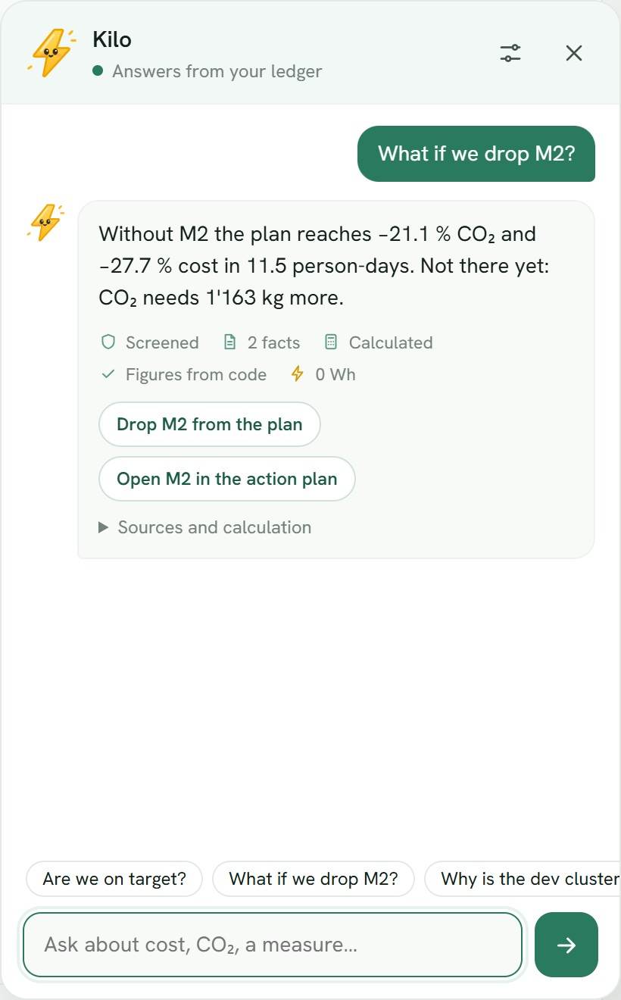
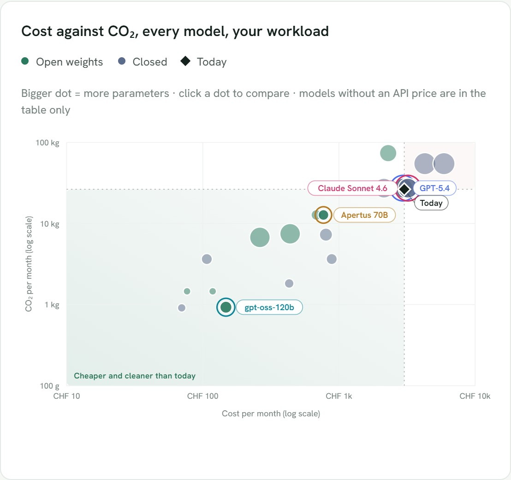

Invoices, servers, AI and SaaS: cost, kWh and CO₂ by month, team and place.
What runs without working, and what is paid but unused.
Each with saving, effort, owner and risk.
Month-end close, nightly jobs, the disaster-recovery server.
28 exports in one ledger, by month, team and place. Two data platforms cause more than half the CO₂.
On Frankfurt's coal-heavy grid it is the largest single source: 1'871 kg CO₂. It now pauses outside office hours and moves to Zurich.
It looked like the biggest saving, but replaying 2'741 real job runs, 1'894 would fail, among them the month-end close. A gentler schedule passes instead. Orders hidden in the data are ignored.
Each server, cluster, AI tool and licence belongs to a team and a person who decides. The footprint becomes someone's job, not nobody's.
From the invoice line to kg CO₂: each step, each factor and its range, each reference. Computed by code, never guessed by an AI.
Savings never cost safety: each new schedule is tested against the real job log, and what would break things is refused or handed to a person.
Which model, how big, which grid it runs on: compared on the company's own use, so the greener choice is also the obvious one.
Every estimate shows its low, middle and high value and where it comes from. The plan holds even when we assume the worst.
It refuses what would break the business, and it ignores orders hidden in the data. A person always decides.
Upload your own exports or connect your cloud and AI accounts, and compare Europe's grids from open data. Our own AI use is counted too.
So that every company can see its digital footprint, own it, and shrink it, without breaking what matters.
Thank you. Questions?

